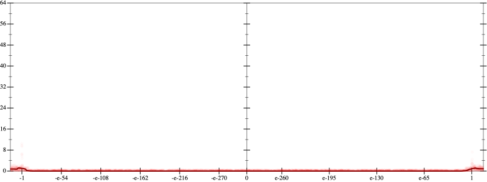
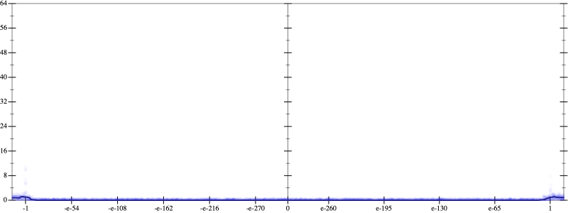
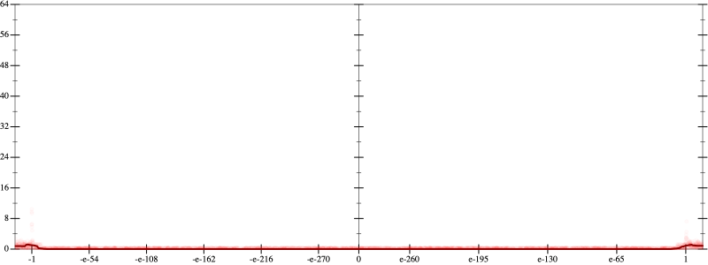
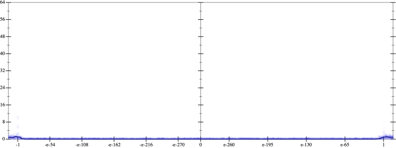
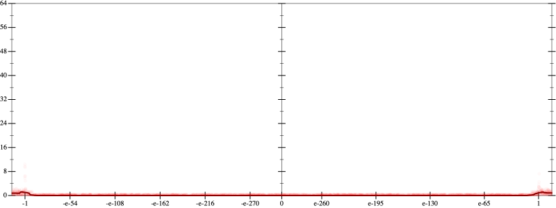
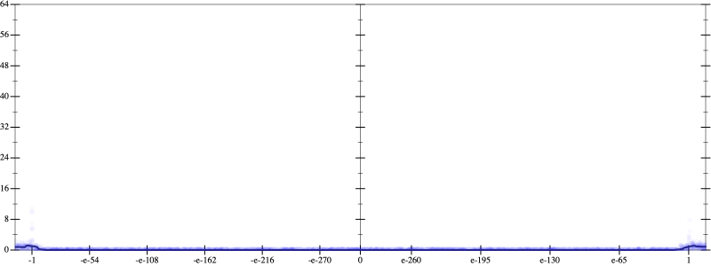

Error
 
Bits error versus x
Bits error versus x
Results
Initial program 0.1
Time bar (total: 57.6s)Debug log
herbie shell --seed 501386223
(FPCore (x)
:name "15"
:pre (and (>= x -1e+16) (<= x 1e+16))
(+ (+ (+ (+ (+ (+ (+ (* -518918400.0 x) (* 2421619200.0 (* (* x x) x))) (* -2905943040.0 (* (* (* (* x x) x) x) x))) (* 1383782400.0 (* (* (* (* (* (* x x) x) x) x) x) x))) (* -307507200.0 (* (* (* (* (* (* (* (* x x) x) x) x) x) x) x) x))) (* 33546240.0 (* (* (* (* (* (* (* (* (* (* x x) x) x) x) x) x) x) x) x) x))) (* -1720320.0 (* (* (* (* (* (* (* (* (* (* (* (* x x) x) x) x) x) x) x) x) x) x) x) x))) (* 32768.0 (* (* (* (* (* (* (* (* (* (* (* (* (* (* x x) x) x) x) x) x) x) x) x) x) x) x) x) x))))